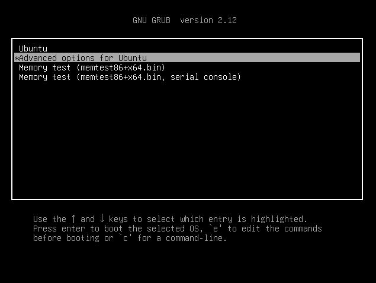
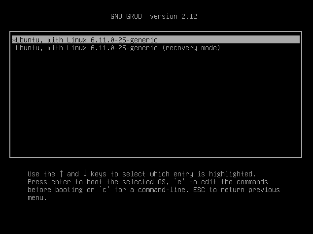
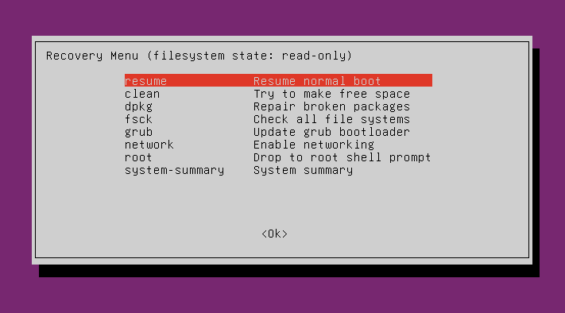
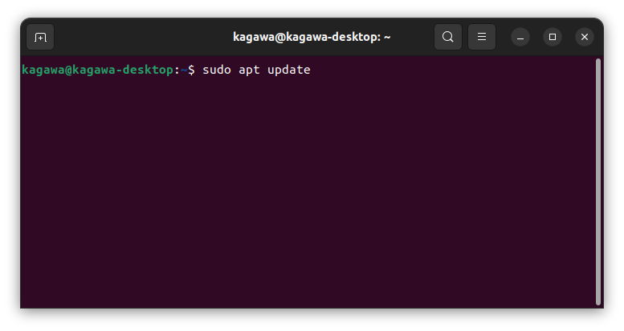
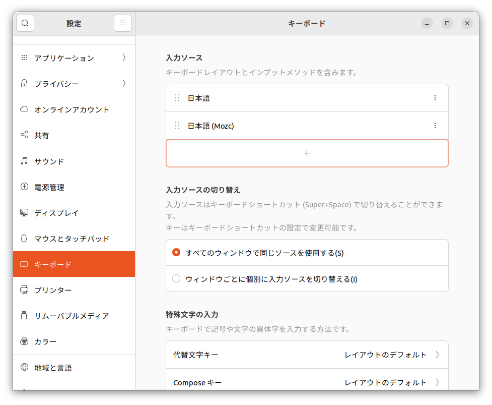

図2 入力ソース
現在使用している最新のPCには、Geforce RTX 4060TiというGPUが搭載されています。ただこのGPUとUbuntuの相性が悪く、インストール後に普通に再起動しても起動しない、という問題が発生します。そこでPart3ではその対処についても記述します。最新のPCでインストールを行っていない場合は適宜読み飛ばしてください。
もしGeforce RTX 4060Tiの搭載されているPCを使用している場合、指示に従って再起動しても起動途中で止まることになります。この対応を行っていきましょう。
まずセーフブートを行います。メーカーロゴが現れた直後にESCキーを押し、GRUBのブートメニューを開きます。

Advanced Options For Ubuntuを選び、次に進みます。次に進むとRecovery modeを開くメニューが出ますので、Recovery modeを選びましょう。

Recovery modeを選ぶと、Recovery menuが開きます。このメニューから、まずはnetworkを選択しネットワークに接続します。

ネットワークに接続できたら、rootを選択してrootに入り、
sudo apt update
sudo apt install nvidia-driver-550
を実行してnvidiaのドライバをインストールしましょう。(もしかしたらnvidia-driver-570でもいけるかもしれないが確証は持てない。)
そしてインストールが終わったら、再起動しましょう。
インストール後に再起動して、Terminal上で
nvidia-smi
を実行してGeforceの詳細が表示されれば、インストールは成功です。
ドライバインストール後、再起動すると、SSDからセーフブートなしでUbuntuが起動します。ここから、必須の設定を行います。
まずはUbuntuのアップデートを行います。Terminal上で、
sudo apt update
と、
sudo apt upgrade
を実行してください。Ubunutu付属のパッケージがアップデートされます。その後必ず再起動してください。

図8 Terminal上でsudo apt updateを打ち込んだ様子
ここからはやった方がいい初期設定などを紹介していきます。
これは設定しなくても良いかもしれない。(最近は標準で日本のサーバになってることが多い。)
初期設定では、apt用のリポジトリサーバが日本のサーバになっていない場合があります。外国のサーバのままだと物理的に距離が離れすぎているので、ダウンロード速度が低下することになります。もし日本のサーバになっていない場合は、日本のサーバを選択しましょう。
詳細な設定方法は、
aptミラーサーバの設定(Ubuntu 上)
上記サイト(金子 邦彦研究室のWebサイトに公開されている資料)を参考にしてみてください。
Ubuntuでも日本語入力用インプットメソッドを使用できます。ここではmozcをインストールしてみます。Terminal上で、
sudo apt install ibus-mozc
としたあと、再起動します。そして設定アプリを開き、キーボード設定の入力ソースから日本語(mozc)を追加しましょう。

図1 キーボード設定
図2 入力ソース
これで、日本語入力が可能になります。
この設定は任意です
設定アプリのRegion & Languageから使用する言語を変更しましょう。フォントやリソースパックが足りない、と言われることもあるので、足りないものは全て入れてしまいましょう。
このとき(または再起動後)、homeやDocumentといったフォルダを日本語名にするか聞かれると思います。日本語にすると端末上での移動が大変面倒になるので、 英語のままでおいておきましょう。
Ubuntu Softwareアプリからインストールすることができます。
検索し、Visual Studio Codeをインストールしましょう。
(動画を見たほうが早いかもしれません。)
お疲れ様でした、このファイルの内容は以上です。自分で色々と試してみると、面白いと思います。もし分からないことがあれば、聞いてください。